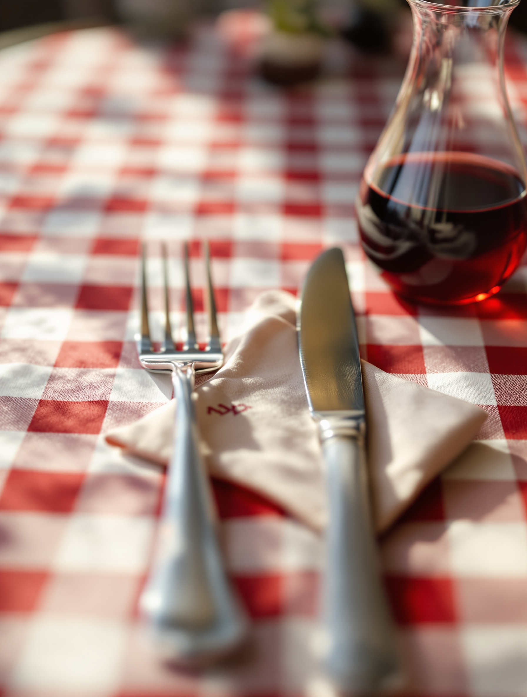
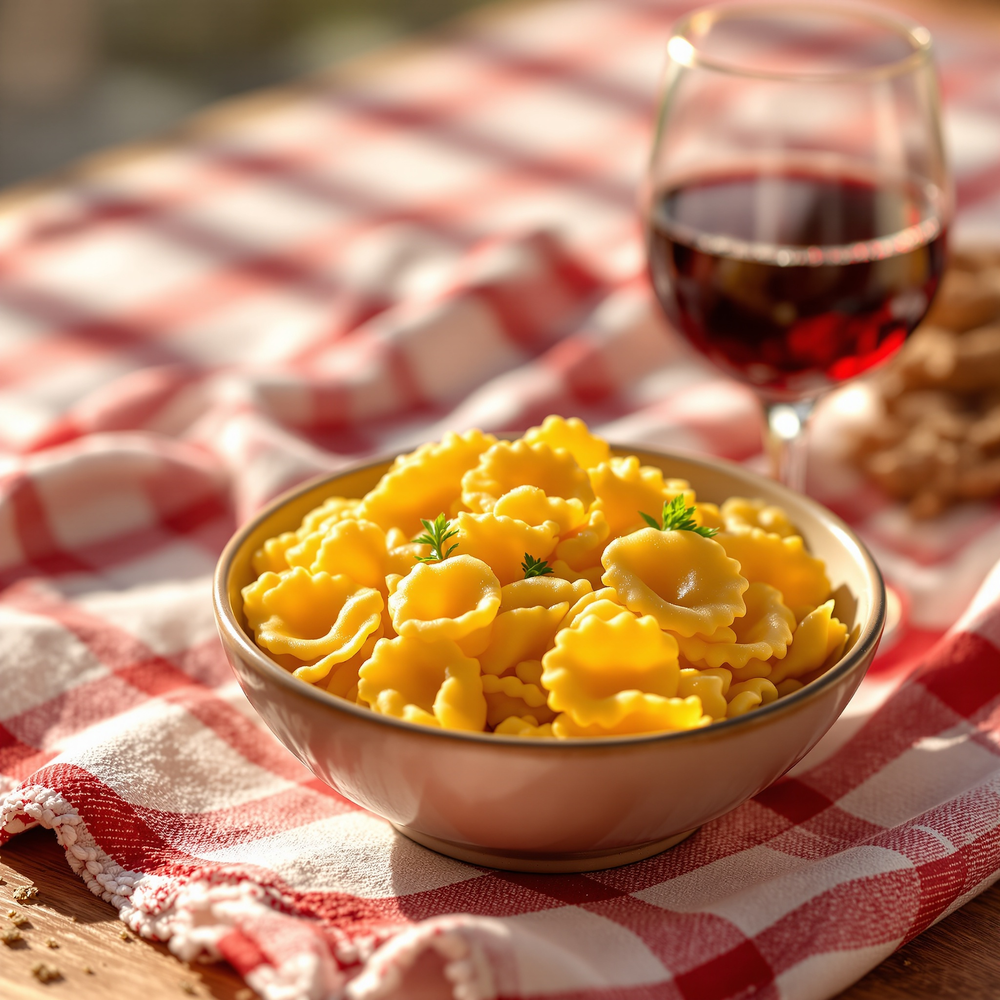
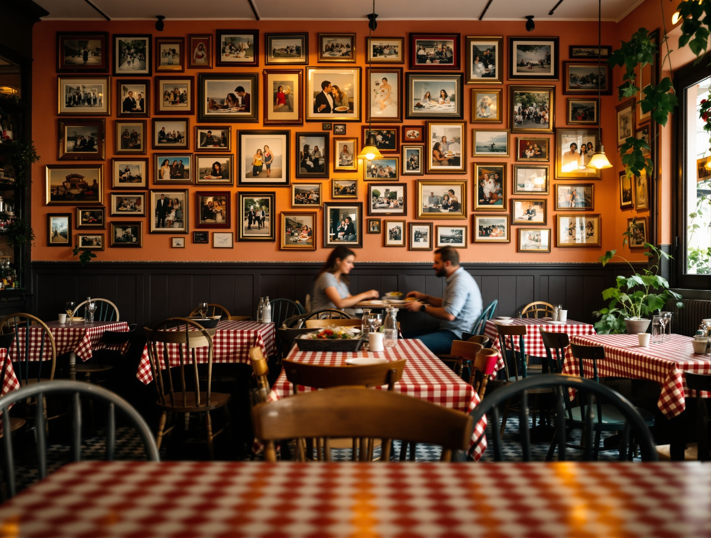
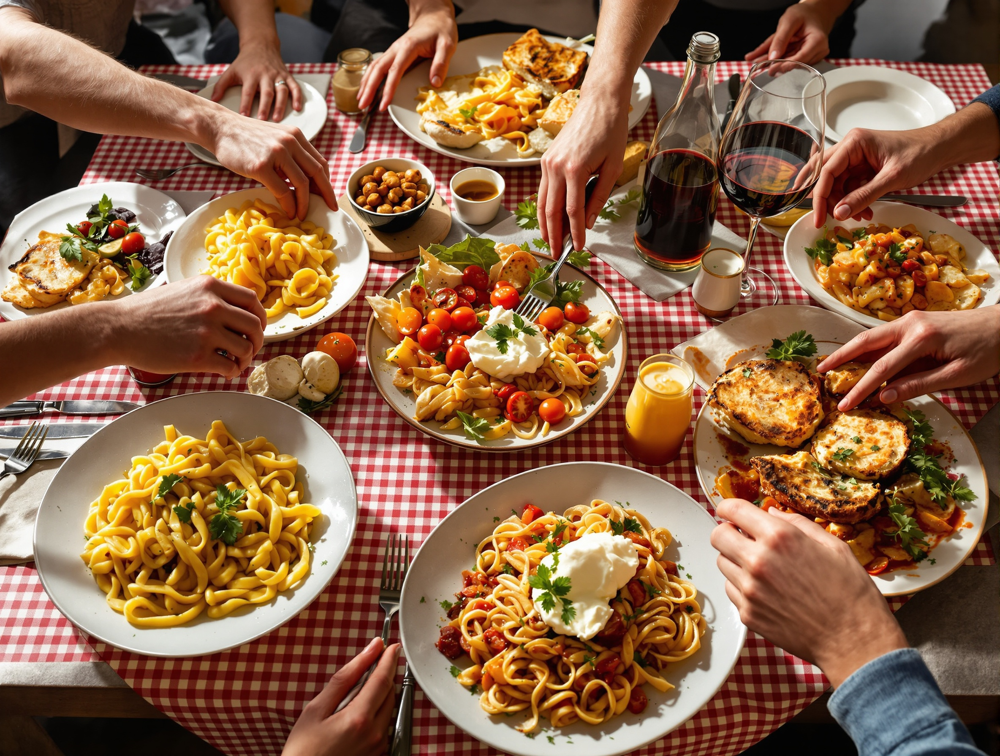
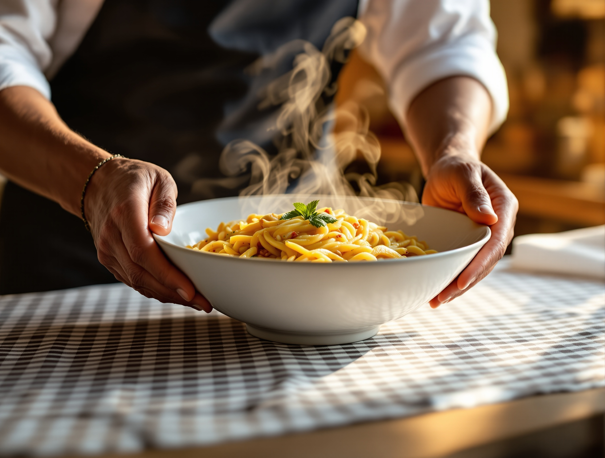
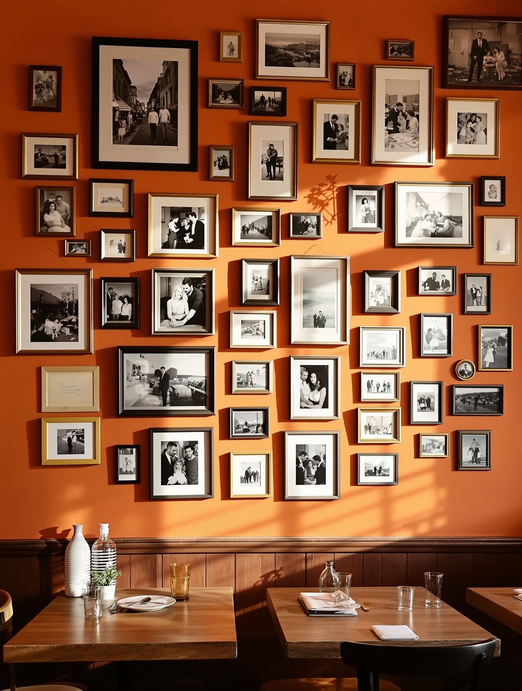
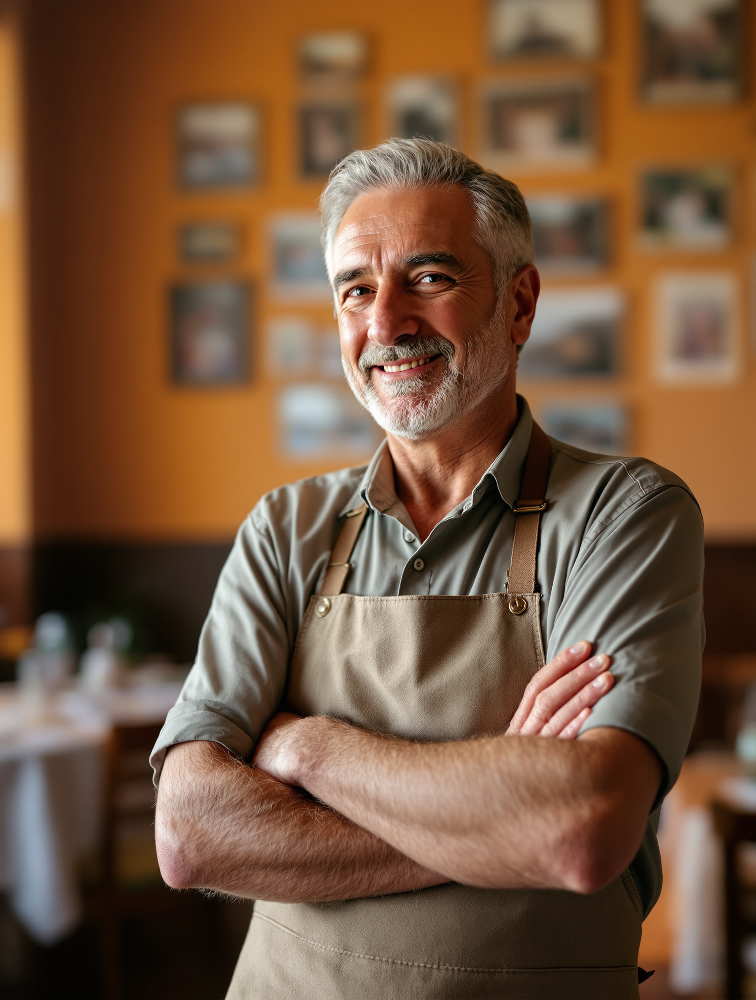
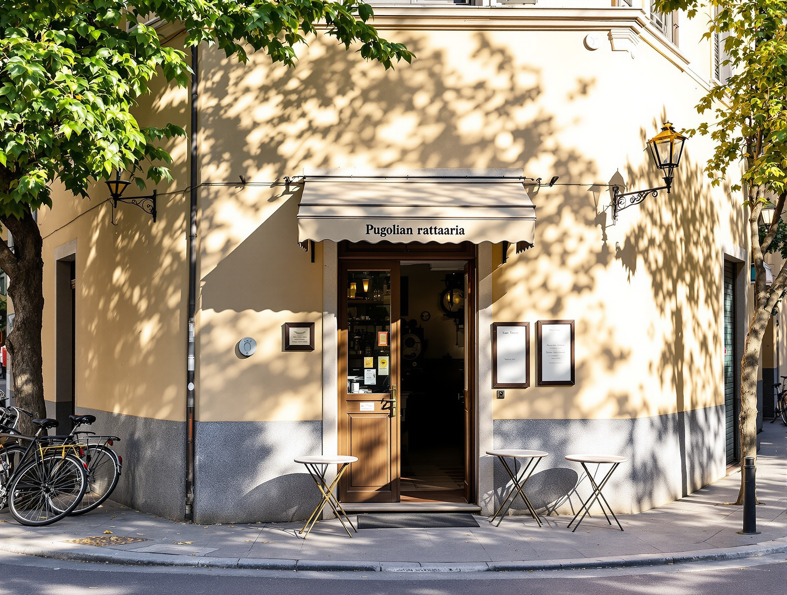

AiMuciaccia
Rifugio pugliese a Milano
All'angolo di Via Costanza c'è una sala a quadretti e una parete tappezzata di foto. Qui si viene per le porzioni di casa, non per un concept. Oltre mille milanesi ci tornano: è la nostra prova migliore.
4,0 su 1039 recensioni · Google



La sala
Un posto che sa di casa
La stanza è piccola e piena. I tavoli stanno vicini, le voci si mescolano.
Alle pareti ci sono le foto di chi è passato di qui: facce, feste, anni di sale piena.
Non abbiamo studiato un'atmosfera. È quella di una tavola di famiglia, e si sente appena si entra.
La tavola apparecchiata
La tovaglia a quadretti, sul serio
Il quadretto bordeaux non è un vezzo da locandina. È la tovaglia vera, quella che stendiamo prima di ogni servizio.
Ci si siede, si versa il vino, si passano i piatti. Da noi si condivide: la tavola è fatta per stare in tanti.



Il muro dei ricordi
Oltre mille storie, appese al muro
Porzioni abbondanti e sapori veri di Puglia — sembra di mangiare da parenti.
Sentimento ricorrente tra le recensioni · Google
Accoglienza calorosa e atmosfera di casa, ci si torna volentieri.
Sentimento ricorrente tra le recensioni · Google

La famiglia Muciaccia
Chi vi accoglie a tavola
Ci portiamo dietro la Puglia: le ricette di casa, il modo di apparecchiare, l'abitudine di trattare gli ospiti come parenti.
Il nome sulla porta è il nostro. In cucina e in sala ci siamo noi, ogni sera.
Per questo lo chiamiamo rifugio: perché a chi entra proviamo a far sentire quello che sentiamo noi quando torniamo a casa.
La prima volta da noi
Come funziona, in due parole
Qualche cosa utile da sapere prima di sedervi.
Le porzioni sono importanti?
Sì, sono di casa. Il consiglio è di ordinare poco e condividere: si mangia meglio e si assaggia di più.
Serve prenotare?
Per stasera anche all'ultimo, ma il sabato la sala si riempie in fretta: una chiamata prima è sempre meglio.
Si sta bene in gruppo?
È il nostro pane. Famiglie e tavolate di amici sono di casa: diteci in quanti siete e vi troviamo posto.
Come si arriva?
Siamo all'angolo tra due vie tranquille di Milano, comodi a piedi e coi mezzi. Trovate mappa e indicazioni qui sotto.

Come trovarci
All'angolo tra due vie
Dove siamo
Via Costanza, angolo Via Giacomo Boni
Milano
Telefono
Quando siamo aperti
A pranzo e a cena; il sabato apriamo a mezzogiorno. Confermate gli orari con una telefonata.
Prenota un tavolo
Un posto per stasera, o per sabato
Non serve cercare il numero altrove. Chiamateci: vi diciamo subito se c'è posto, e vi teniamo il tavolo. Rispondiamo noi, quelli che poi vi accolgono in sala.
Prenotazioni
Chiamate negli orari di apertura: vi rispondiamo direttamente dalla sala.
Chiama per prenotare